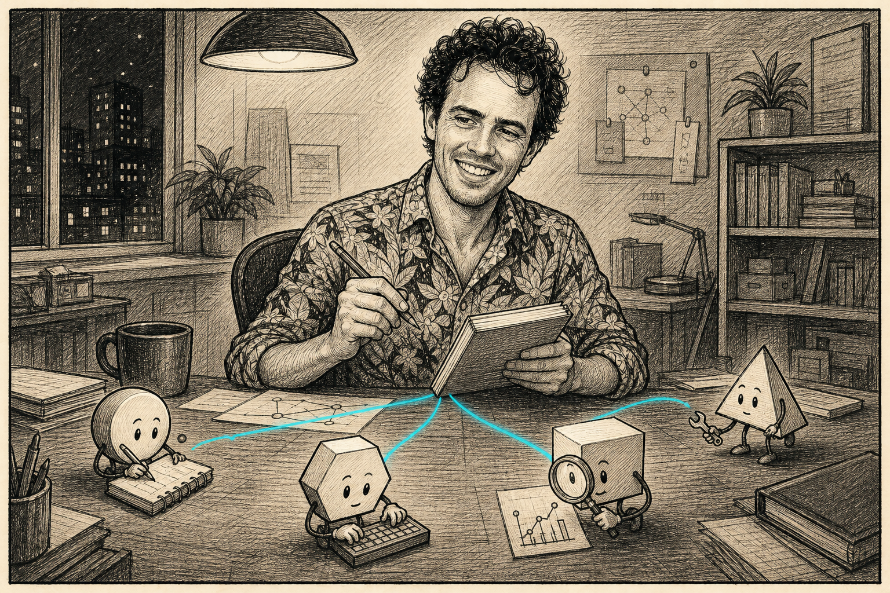
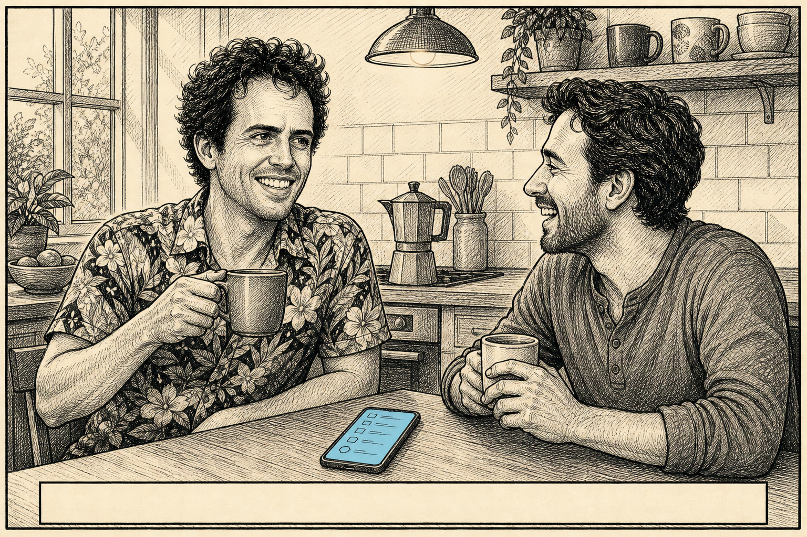

In an earlier version of this essay, this was the point where the article quietly became a different article. The first one was about data entry — about systems losing the shape of the work and making people put it back by hand. It ended at a thing called Thread. If you haven’t read it, the short version is: I have spent twenty years noticing the same wrong-frame thing across very different jobs, mostly without realising it was the same thing.
This one is about the person who kept noticing. About why he kept losing tools, abandoning projects at 80%, and looking, on paper, scattered. And about what happened when prescribed ADHD medication and a swarm of cheap fast AI agents arrived more or less at the same time.
The thesis, stated up front so I don’t have to dance around it: ADHD plus medication plus AI agents changed the economics of being a cross-domain generalist. The same wiring that used to produce unfinished projects, dropped tools, and a CV that read as scattered can now be useful, for now, when paired with specialist agents that absorb the boring grind. I don’t know how long the for now lasts. I’ll get to that.
What the meds actually changed
Worth flagging up front: the technical through-line in the previous article existed in my subconscious for twenty years. The conscious experience was chaos. The two facts coexisted, and I’d like to talk about how, because the way they coexisted is the bit that just stopped being permanent.
A few months ago I started on prescribed ADHD medication. It has been the most useful single intervention I’ve had in my professional life. (Yes, a Director of Flight Sciences blogging about ADHD meds is a deliberate exposure decision; half-strength is worse than either fully in or fully out, so it’s fully in.) The reason it earns a paragraph here, beyond the personal, is that the meds let me see why AI is a good fit for the way my brain works. The AI’s job is the boring grind I’m bad at; the meds gave me enough executive function to actually hand the grind over rather than abandoning the project at the same point I always did before.
The thing the meds clarified, which I hadn’t expected: I always thought ADHD meds would stop me jumping between things. What I learned is I was never that good at it. I’d drop tools when I was done with them like they ceased to exist. I’d start a thing, work on it intensely, get it to a state I considered “essentially done,” and never come back to harden, document, productionise, or in some cases even commit it. The boring grind at the end of a project wasn’t visible to me — not as in “I avoided it,” more as in “I didn’t perceive it as a thing that existed.”
The meds didn’t kill the through-line. Topology, refusing to flatten, network-shaped problems — that was always there. What the meds turned down was the chaos around it. I can now look at a half-finished thing, see that it’s half-finished, and finish it. That sounds embarrassingly basic. It is.
The flowchart is a two-state animation. State one is the meme everyone with an ADHD diagnosis has seen forty times: get new idea → start new project → tell everyone → loop, with “finish project” floating off to the side, disconnected. State two is my actual flowchart now: get new idea → recognise it’s connected to three previous ideas → hand the boring bits to a swarm of agents → stay at the connection level → actually finish. The original loop is preserved, because that bit didn’t go away and I don’t want to pretend it did. What’s new is the connection to the AI swarm that does the boring grind, and the connection from that swarm back to “finish project,” now a green node instead of an orphan.
The brain doesn’t get fixed. It gets supplemented. I’m not going to extend that into self-help — half the internet is doing that already — but I need it on record for what comes next, because the configuration the meds enabled is the configuration the rest of this post is about.
The configuration
The current AI configuration that works for me, in 2026, is one person with cross-domain taste running a swarm of fast cheap specialists.

The specialists are good — really good, on bounded problems, at speeds and costs that didn’t exist eighteen months ago. They write boilerplate, do schema migrations, run literature sweeps, draft tests, regenerate boring sections of articles in the right voice if you give them the voice file. What they don’t do, reliably, is notice that two problems in different communities are the same problem.
That’s the role I’ve ended up in. Generalist orchestrator. Hold the shape of the problem, route the bounded sub-problems out to the swarm, integrate the answers back, decide when an answer is wrong. Exactly the role my PhD supervisor played for me, and exactly the role I had no idea I’d been training for.
It’s worth being precise about what cross-domain taste means here, because the phrase gets used loosely. It isn’t being a polymath. I’m not a polymath. I’m someone who has been a mediocre specialist in a slightly unusual number of communities — flight dynamics, controls, optimisation, software engineering, databases, scientific viz, OR — and the badly, in all of them is doing the work. The thing you can do, after enough of that, is recognise when a problem in one community is structurally the same as a problem you’ve already seen in another. You don’t need to be the best in the room at any of them. You need to have wandered through enough rooms to recognise the furniture.
That’s what the swarm can’t do. Each specialist is excellent at the room it lives in. Almost none of them have wandered.
The PhD supervisor analogy is the closest thing I have to an honest description of what the orchestrator role looks like day to day. A good supervisor doesn’t write the thesis. They don’t run the simulations either. They notice that the result you’re stuck on connects to a chapter from somebody else’s group last year, send you a paper, ask the right next question, kick you off the dead end you’d have stayed on for three more weeks. Their value is almost entirely about routing and shape-recognition, and almost none of it is about doing the bounded work. Anyone who’s had a good one will know what I mean. Anyone who’s had a bad one will know what I mean even more clearly.
Why this configuration didn’t exist before
A brain wired the way mine is — refusing to flatten, jumping between problems, holding loose connections across communities, pathologically uninterested in the boring grind — was previously an engineering tax. You paid it in unfinished projects, dropped tools, and a CV that read as “scattered” to anyone whose filter rewarded coherence over connection. There was no operational answer to the grind. You either ground through it yourself, badly, eventually, or you didn’t, and the work didn’t ship.
Two things changed at roughly the same time.
The meds made the unfinished loop visible. Before, “essentially done” felt like done. Now it doesn’t. I can see the gap between “the interesting bit works” and “this is a thing other humans can use,” and I can stay in the room long enough to close it.
The agents made closing it cheap. The 80% to 100% — tests, docstrings, edge cases, the boring data cleaning, the literature sweep that confirms you haven’t reinvented something from 1987 — used to be the bit that killed the project. Now it’s the bit a swarm picks up while I’m doing something else.
Neither alone would have done it. The meds without the agents would have given me visibility of the grind without much help getting through it. The agents without the meds would have given me help on a grind I still couldn’t see. The pair is what works.
A small social side-effect I wasn’t expecting: I used to vocalise hair-brained ideas at whoever was in earshot, because saying a thing out loud is how I worked out whether it was any good. Now I can talk to people about normal things and route the half-formed pre-ideas to an AI instead. Lorraine has noticed. The improvement is, on her end, considerable.

The thing the swarm can’t do
Use the previous article as the worked example. I told the LLM about Plotly, Paradigm, Postgres, Thread. It saw the surface pattern (refusing to flatten data) early and confidently. It did not see the deeper one (topology as first-class) until I named it. We had four beats fitted into a “data richness” frame before I noticed the frame was wrong.
Asked afterwards why it missed it, the LLM gave me a useful answer: almost no one is a specialist in two of those communities at once. DAGs in software engineering, graphs in OR, network topology in telecoms, provenance in databases and archaeology — same mathematical object, different folklore. The cross-walk papers don’t get written, because the people who’d write them are too busy doing the cross-walks.
Even a model that has read more about graph theory and CFD provenance than I ever will didn’t bridge them, because the bridge isn’t in the corpus. The bridge was in my head. The bridges live in the heads of generalists and there isn’t currently a substitute, which is fragile, and which, for now, is rare and valuable.
I want to be careful not to oversell that. AI may develop something taste-shaped — something that holds problem shape across communities and notices when their vocabularies are pointing at the same underlying thing. If it does, the orchestrator role compresses, possibly hard. The honest version: right now, in 2026, this configuration is real and rare. The window depends on how fast taste-shaped AI arrives, and I don’t know how fast that is.
What I’ll say with more confidence is that the configuration didn’t exist before. Now the same wiring that used to be a tax is the bit the orchestrator role rewards, because the swarm picks up the grind tax that used to compound on you alone. Unfinished projects are something the swarm finishes. Scattered interests are something the swarm follows up on. The connection-noticing — the bit I was always actually doing, even when I didn’t know it — is the bit no specialist in the swarm can do for me, because the connection requires having been all of those specialists, badly, at once.
How this article got made
I should be transparent about something. This article was written this way.
I wrote prompts. A swarm drafted. I edited. The LLM had a copy of Writing Style - Harry Smith.md and tried, with mixed success, to sound like me. I rewrote the bits where it didn’t. The voice you’ve just read is mine, not because the LLM wrote in my voice, but because I rewrote until it did. The orchestrator-and-swarm configuration in this article isn’t a thesis I’m asserting at you in the abstract — it’s the thing that produced the article you’re reading. Form follows content one more time. That’s the post.
The bit the swarm couldn’t do, here, was the same bit it couldn’t do with Paradigm and Thread. It could draft any individual section in roughly the right voice. It could not, on its own, notice that two articles were tangled together inside one and decide where to cut. The shape decision was the human bit. The grind around the shape decision wasn’t, and I’m grateful for that, because I would otherwise have abandoned this draft at the same point I usually abandon drafts.
One more thing, by way of P.S. I made a video version of an adjacent argument a while back — Where did that plot come from? — same instinct, done for fun rather than for prose. Thread, but louder.
The thread
So here’s where this lands.
The brain didn’t get fixed. It got supplemented. The meds made the unfinished loop visible. The agents pick up the grind that used to kill the project at 80%. What remains for me is the part I was apparently doing all along: holding the shape, noticing the bridge, deciding which specialist answer belongs where.
Maybe AI compresses that role later. I don’t know. In 2026, it is real.
The brain that was a tax is now an asset.